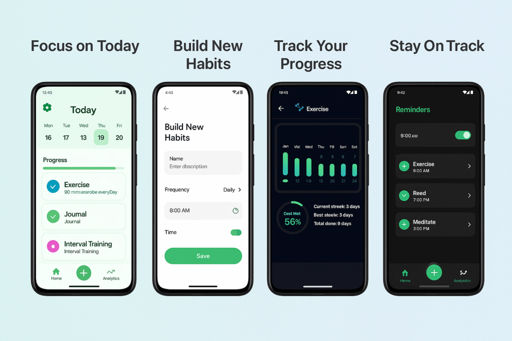

Daily check-ins
See your habits for today and mark each small win as it happens.
Your day, at your pace
Make room for the routines that matter. The Habito habit tracker app helps you keep track, stay encouraged, and build momentum one day at a time.

A gentler way to grow
Big changes can start with something small. Habito gives your everyday routines a clear, encouraging place to take shape.
Everything you need, nothing you don't
See your habits for today and mark each small win as it happens.
Set a pace that works for you and watch your consistency grow.
Choose reminders that bring you back to your routine, without the fuss.
Look back on your activity and find encouragement in how far you've come.
Easy to begin
Start with what matters today. You can shape your routine as you go—there's no perfect pace to keep.
Find your rhythmPick a routine you'd like to make part of your day.
Choose a schedule and reminder that feel comfortable.
Check in, notice your progress, and keep going when you're ready.
A simple way to get started
To track a habit, choose one clear action, decide when you want to do it, and record each check-in. Review your progress regularly and adjust your routine to fit real life.
Choose an action you can clearly complete, such as a short walk or a few minutes of reading.
Decide how often to do it and pick a time that fits your day. Start with a pace you can maintain.
Use a daily habit tracker to mark completed habits and set reminders for the routines you want to remember.
Look back at your check-ins and streaks. If a routine is hard to keep, make it smaller or change its schedule.
Looking for the best habit tracking app for your routine? The best fit is one that feels simple enough to use consistently. Habito brings habit check-ins, reminders, goals, and progress together in one Android app.
Take a closer look
Get a quick look at the app and see how a few small check-ins can bring more shape to your everyday routine.
Your routine. Your space.
No account to create. Habito is built to help you focus on your habits, with an offline-first experience on your phone.
A few quick answers
Choose a habit, set a schedule that suits you, and use daily check-ins to record it. Reminders and progress tracking can help you stay consistent.
No. You can start using Habito without signing in.
Habito is designed with an offline-first experience, so you can keep up with your routines on your phone.
Use the Google Play link below to visit the Habito app listing.
Habito may suit you if you want an Android app for daily habit check-ins, goals, streaks, reminders, and progress without creating an account.
Your next small step
Make today a little more intentional with Habito.
Download onGoogle Play